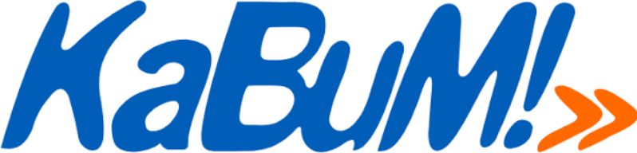
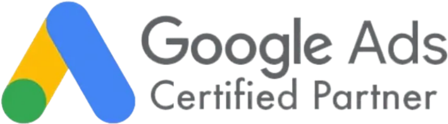

↗
01Growth & Estratégia
Diagnóstico, posicionamento, funil, oferta e plano de crescimento alinhados ao seu momento de negócio.
- Consultoria completa
- Planejamento comercial
- Copy e storytelling
Marketing + Growth + Tecnologia
Estratégia, conteúdo, mídia, sites, e-commerce e IA conectados para transformar atenção em oportunidade e oportunidade em receita.
O que fazemos
Entramos onde sua operação mais precisa e conectamos os pontos para criar crescimento consistente.
Diagnóstico, posicionamento, funil, oferta e plano de crescimento alinhados ao seu momento de negócio.
Campanhas orientadas à conversão nos canais onde seu público toma decisões.
Presença digital profissional, com conteúdo que cria valor, posiciona e prepara a venda.
Experiências rápidas, responsivas e construídas para transformar visitas em contatos.
Da estruturação da loja à operação em marketplaces, com catálogo, anúncios e gestão.
Marcas com presença, coerência e aplicação prática em todos os pontos de contato.
Chatbots e atendimento no WhatsApp 100% personalizados para acelerar respostas, qualificar leads e reduzir tarefas repetitivas.
Nosso método
Sem receita pronta. Investigamos o cenário, definimos prioridades e executamos o que pode gerar impacto real.
Entendemos negócio, público, oferta, canais e gargalos antes de movimentar verba.
Desenhamos posicionamento, jornada, metas e plano de ação com prioridades claras.
Colocamos conteúdo, mídia, páginas, automações e operação para trabalharem juntos.
Lemos os dados, aprendemos rápido e direcionamos energia para o que traz retorno.
Soluções no seu momento
A Hunt atende desde quem quer começar a vender online com estrutura profissional até empresas que precisam integrar marketing, vendas e tecnologia.
Descobrir o melhor caminho ↗Marca, canais, presença, oferta e estrutura comercial para iniciar com segurança.
Reposicionamento, campanhas e processos para gerar mais oportunidades com consistência.
Growth, automação, multicanal e otimização contínua para ganhar eficiência e escala.
Casos
Conheça o trabalho da Hunt em saúde, varejo e serviços: da presença digital à expansão dos canais de venda.
Saúde · Minas Gerais
Gestão de mídias sociais e tráfego pago, sites e e-commerce para uma rede com 32 filiais em Minas Gerais.
Mais de 9.000 novos clientes.
E-commerce · Multicanal
Gestão de tráfego para o site, Shopee Ads e consultoria para otimização da operação e ativação de novos canais de venda.
Ativação do Mercado Livre, Amazon e TikTok como canais de vendas.
Varejo · Franquia MG · Loja 12554
Campanha de Dia das Mães
Campanha com influenciadora, fotografia, edição e gestão de tráfego para uma loja franqueada em Minas Gerais.
Presença digital · Inauguração
Da estrutura digital à inauguração
Estruturação das redes sociais com foco em SEO para facilitar a descoberta pelos clientes no Google e no Instagram. Consultoria para estratégias de lançamento e inauguração, com estruturação da campanha de inauguração.
Quem caça oportunidades, encontra crescimento
Somos uma empresa de marketing e tecnologia com visão comercial. Não entregamos peças isoladas. Construímos conexões entre marca, audiência, atendimento e vendas.
clientes atendidos
especialistas no time
mais velocidade em atendimento com automação*
para projetos expressos selecionados*
Certificações e parcerias


Conhecimento certificado e relacionamento com plataformas presentes na operação digital dos nossos clientes.
Perguntas frequentes
Sim. Criamos desde a base da marca e dos canais até a primeira estrutura de vendas online, sempre respeitando o momento e o orçamento do negócio.
Sim. Landing pages, sites, identidade visual, estruturação de lojas e automações podem ser contratados como projetos específicos.
Após o diagnóstico, definimos escopo, metas, canais e rotina de acompanhamento. O trabalho pode conectar conteúdo, mídia paga, páginas e automação.
Depende da oferta, mercado, investimento e maturidade da operação. Nosso compromisso é definir indicadores claros, testar com método e otimizar com base em dados.
Vamos conversar?
Conte um pouco sobre sua empresa. A conversa segue direto no WhatsApp com nosso time.